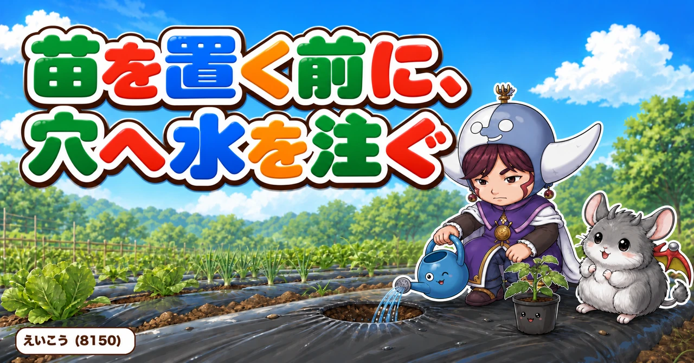
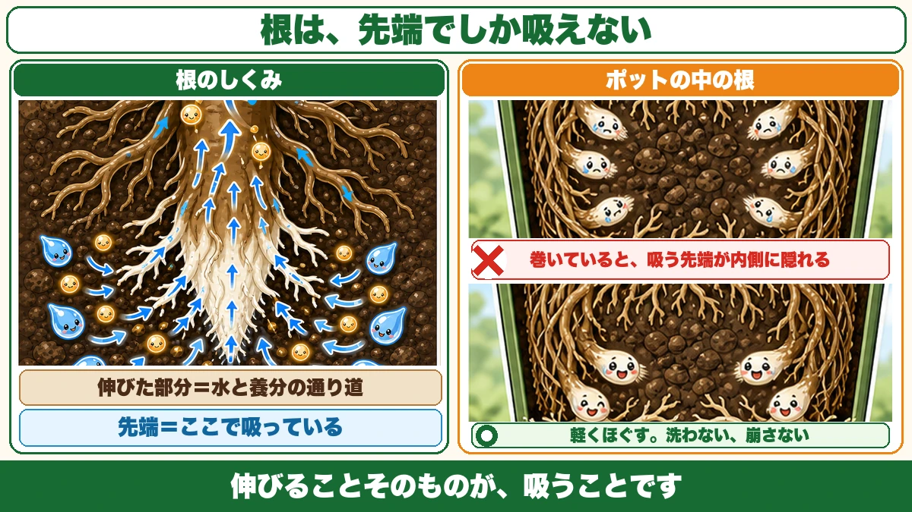
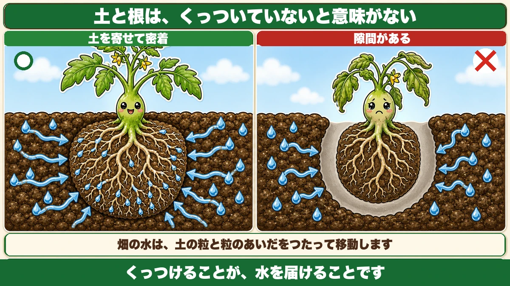
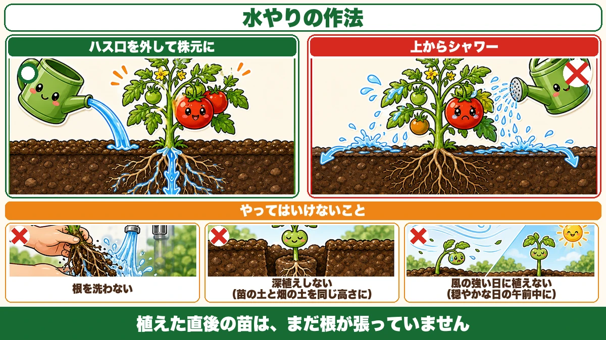
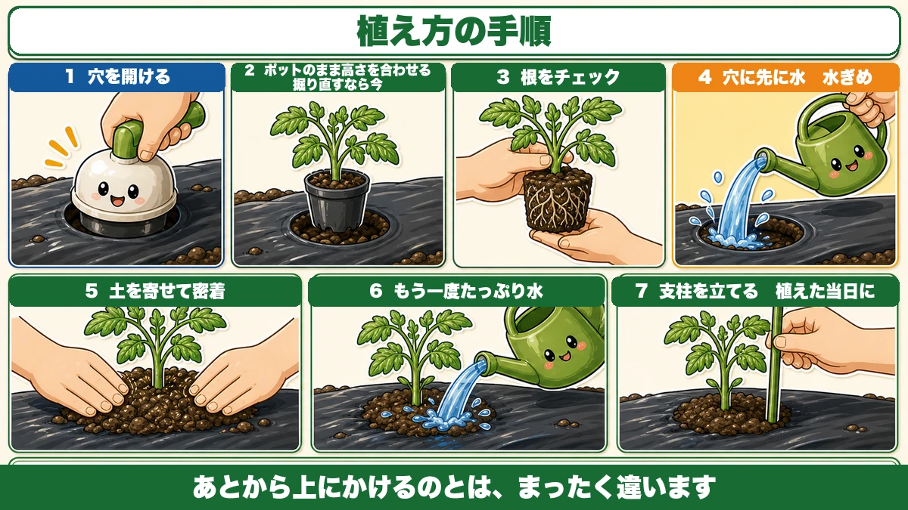

苗の植え付け（定植）の基本｜活着を早める手順・水やり・植える深さ・根鉢の扱い

どうも、8150（えいこう）です🌱 家庭菜園歴8年、理科の教員免許を持っていて、有機・無農薬で野菜を育てています。
📖 この記事の目次
この記事で分かること
- 苗を畑に植えることを「定植（ていしょく）」と言います。植えた苗が、まわりの土に根を伸ばして、しっかり根づくことを「活着（かっちゃく）」と言います。
- 活着が早いほど、そのあとの育ちがよくなります。植えた日から、もう勝負は始まっています。
- 植える前に、苗のポットにたっぷり水を吸わせておきます。
- 植え穴にも先に水を入れ、水が引いてから苗を置きます。
- 根鉢（ポットの中の根と土のかたまり）は、基本はくずさずに植えます。根がひどく巻いているときだけ、軽くほぐします。
- 植える深さは、野菜によって違います。いちごは株のまん中を埋めない、接ぎ木苗はつぎ目を埋めない、などの決まりがあります。
ホームセンターで元気な苗を買ってきて、畑に植えた。でも、なかなか大きくならない。数日たっても、しおれたまま。そんな経験はありませんか。
苗を植えるのは、穴を掘って、苗を入れて、土をかぶせるだけ。簡単そうに見えますが、実はちょっとしたコツで、植えたあとの育ち方が大きく変わります。
安心してください。この記事では、苗を植える前の準備から、植え方の手順、植えたあとの1週間の見回りまで、順番に書いていきます。説明が分かれるところも、並べて比べています。
早見：定植の基本（ひと目で分かる目安）
植える前の準備
- 苗のポットを、ポットの半分くらいの深さの水につけて、30分ほど水を吸わせる（苗ごと水に沈めない）
- 植える場所の土づくりは、植える2週間くらい前までにすませておく
- マルチを張るなら、植える前に張っておく
植え方の流れ
- 植え穴を掘る（マルチなら穴をあける）
- ポットのまま穴に置いて、高さを確かめる
- 根の巻き具合を見る
- 植え穴に水をたっぷり入れ、水が引くのを待つ
- 苗を置いて、まわりから土を寄せ、軽く押さえる
- もう一度水をやる
- 支柱を立てて、軽く結ぶ
植える深さの目安
- 多くの夏野菜：根鉢の上の面が、まわりの土と同じくらいか、少し高め
- 接ぎ木苗：つぎ目が土に埋まらないように
- いちご：株のまん中（クラウン）を土に埋めない
- さつまいも：苗を斜めや水平に寝かせて植える。葉のつけ根の芽（成長点）を埋めない
植える時間帯
- 強い日差しの日中は避ける
- 曇りの日や、晴れた日なら夕方の涼しい時間がおすすめ
- 風の強い日は避ける
植える時期のおおよその目安
- 夏野菜（トマト・なす・ピーマン・きゅうりなど）：4月下旬〜5月。最低気温が十分に上がってから
- さつまいも：5月〜6月
- 秋冬野菜（白菜・キャベツ・ブロッコリーなど）：8月下旬〜9月
- いちご：10月ごろ
- 玉ねぎ：11月ごろ
地域によって前後します。種袋や苗の札に書かれた時期を目安にしてください。
株と株の間かくの目安
- トマト・なす・ピーマン：50cmくらい
- きゅうり：40〜50cmくらい
- ズッキーニ・かぼちゃ：80cm〜1mくらい
- 白菜：40〜45cmくらい
- キャベツ・ブロッコリー：40〜50cmくらい
- いちご：30cmくらい
- 玉ねぎ：10〜15cmくらい
苗が小さいうちは、すき間が広く見えて、つい詰めて植えたくなります。でも、育つと葉が広がって、思った以上に場所をとります。混みあうと、風通しが悪くなって病気が出やすくなるので、目安どおりにあけて植えてください。
作業の手順
ここからは、苗を植える流れを、順番に書いていきます。
手順0：植える場所を準備しておく
苗を植える前に、植える場所の準備をすませておきます。
- 土づくり：たい肥や肥料を入れて耕すのは、植える2週間くらい前までに。肥料を入れた直後に植えると、根を傷めることがある
- 畝立て：水はけをよくするために、畝を立てておく
- マルチ：張るなら、植える前に張っておく。地温を上げたい春の植えつけでは、数日前に張って土を温めておくと、根づきが早くなる
準備ができていない場所に急いで植えると、そのあとの育ちに響きます。苗を買う前に、植える場所の準備を整えておきましょう。
苗を外の環境に慣らす
ホームセンターの売り場や、家の中で育てていた苗は、畑の強い日差しや風に慣れていません。いきなり畑に植えると、葉が焼けたり、しおれたりすることがあります。
植える数日前から、昼間は外に出して日に当て、夜は取りこむ、というふうに、少しずつ外の環境に慣らしておくと、植えたあとの根づきがよくなります。
手順1：植える前に、苗に水を吸わせる
まず、植える前に、苗のポットにたっぷり水を吸わせておきます。
- バケツなどに水を張り、ポットの半分くらいの深さまで水につける
- 30分ほどそのままにして、ポットの土に水を吸わせる
- 苗ごと水に沈めない（葉や茎まで水につかると、傷むことがある）
ポットの土がからからに乾いたまま植えると、植えたあとに水をやっても、根鉢の中まで水がしみこみにくくなります。からからに乾いた土は、水をはじいてしまいやすいからです。植える前に、根鉢の中までしっかり湿らせておくのがコツです。
水につける時間がないときは、植える前日か当日の朝に、ポットの底から水が流れ出るまで、たっぷり水をやっておくだけでも違います。
用意しておくと便利な道具
- 移植ごて（小さなスコップ）：植え穴を掘る
- じょうろ：はす口を外せるものだと、植え穴に水を注ぎやすい
- バケツ：苗のポットを水につける
- マルチの穴あけ器（なければ、はさみやカッター）
- 支柱とひも
- 不織布や寒冷紗：寒さや日差しから苗を守る
道具を植える場所のそばにまとめておくと、苗をポットから出してから植え終わるまでの時間を短くでき、根鉢を乾かさずにすみます。
手順2：植え穴を掘る
植える場所に、ポットよりひとまわり大きい穴を掘ります。マルチを張っている場合は、マルチに穴をあけてから、土を掘ります。
株と株の間かくは、野菜ごとに決まった目安があります。苗が小さいうちはすき間が広く見えますが、育つととても大きくなるので、目安どおりにあけてください。
手順3：ポットのまま穴に置いて、高さを確かめる
苗をポットから出す前に、ポットのまま穴に置いてみます。
- ポットの土の表面と、まわりの畑の土の高さを見比べる
- 深すぎるなら、穴の底に土を戻す
- 浅すぎるなら、もう少し掘る
ポットから出してからだと、根鉢を持ったまま何度も穴に出し入れすることになり、根鉢がくずれてしまいます。先にポットのまま高さを合わせておくと、植えるときの作業が一度ですみます。
手順4：根の巻き具合を見る
苗をポットから出して、根鉢のようすを見ます。
- 根鉢の外側に、白い根が少し見えている：ちょうどいい状態。そのまま植える
- 根鉢のまわりを、根がぐるぐると何重にも巻いている：根が巻きすぎている状態。底のほうの根を、指で軽くほぐしてから植える
根がひどく巻いているときだけ、軽くほぐします。根鉢を大きくくずしたり、根を洗って土を落としたりはしません。細い根が切れて、根づくまでに時間がかかってしまいます。

手順5：植え穴に先に水を入れる
植え穴に、先に水をたっぷり入れます。苗を置く前のひと手間ですが、根づきの早さに差が出るところです。
- じょうろの先のはす口（細かい穴のついた部分）を外して、穴の中に水を注ぐ
- 水がしみこんで、引いていくのを待つ
- 水が引いてから、苗を置く
先に植え穴を湿らせておくと、苗のまわりの土が乾いていないので、根が伸び出しやすくなります。水がたまったままのところに苗を入れると、泥になって根鉢のまわりが固まりやすいので、水が引くのを待つのがポイントです。
手順6：苗を置いて、土を寄せる
水が引いたら、苗を穴に置きます。
- 根鉢をくずさないように、そっと置く
- まわりから土を寄せて、根鉢と土のすき間を埋める
- 株元を手で軽く押さえて、根鉢とまわりの土をなじませる
根鉢とまわりの土のあいだにすき間があると、根がうまく外へ伸びていけません。また、水もすき間で途切れて、根鉢に届きにくくなります。すき間ができないように、まわりから土を寄せるのが大切です。
ただし、強く押しつけすぎるのもよくありません。土がかたくなりすぎて、根が伸びにくくなります。手のひらで軽く押さえる程度にしてください。

手順7：仕上げの水やり
植え終わったら、もう一度、株元にたっぷり水をやります。
- 株のまわりに、ゆっくり水を注ぐ
- 根鉢とまわりの土が、水でなじむように
- 葉の上からではなく、株元に
この仕上げの水で、根鉢とまわりの土がさらになじんで、すき間が埋まります。

手順8：支柱を立てて、軽く結ぶ
トマトやなす、きゅうりなど、背が高くなる野菜は、植えたその日に支柱を立てて、軽く結んでおきます。
植えたばかりの苗は、根がまだ張っていないので、風で揺れると、伸び始めた根が切れてしまいます。小さい苗のうちは、短い仮支柱を斜めに差して、根鉢を傷つけないように支えるといいです。
ひもは、苗の側はゆとりを持たせ、支柱の側はしっかり結びます。茎がこれから太くなるので、きつく縛らないようにしてください。

野菜ごとの植え方のポイント
トマト
- 植える前に、ポットごと水を吸わせておく
- 根鉢の上の面が、まわりの土と同じくらいになるように
- 接ぎ木苗は、つぎ目を土に埋めない
- 最初の花房（花のかたまり）が、通路側を向くように植えると、あとで実がとりやすい
なす・ピーマン
- 寒さに弱いので、十分に暖かくなってから植える
- 根鉢をくずさないように植える
- 植えたら、すぐに仮支柱で支える
きゅうり
- 根が浅く広がる野菜なので、深植えしない
- 植えたら、早めにネットや支柱に誘引する
いちご
- 株のまん中の、葉が出てくる部分（クラウン）を土に埋めない。埋めると腐りやすくなる
- 浅すぎて根が見えるのもよくない。クラウンの下まで土がかぶるくらいに
- 親株から伸びていたつる（ランナー）の跡の向きで、実がつく方向が分かると言われる
さつまいも
- 苗（つる）を斜めや、寝かせるように植える
- 葉のつけ根の芽（成長点）は、土に埋めない
- 植えたあとは、軽く水をやる。肥料、特に窒素の多い肥料は控えめに
玉ねぎ
- 苗は、葉の分かれ目（緑と白の境目あたり）を埋めないくらいの深さに植える
- 根をなるべく切らずに植える、という方法と、作業しやすいように根を短く切ってから植える、という方法がある
- 土が湿っていれば、植えたあとの水やりは控えめでいい、という説明がある
白菜・キャベツ・ブロッコリー
- 植えたら、すぐに防虫ネットをかける
- 暑い時期の植えつけなら、根づくまで日よけをする
- 葉が、熱くなったマルチに直接ふれないように
ズッキーニ・かぼちゃ・スイカ
- 株が大きく広がるので、株の間を広くとる
- スイカやかぼちゃの接ぎ木苗は、つぎ目を埋めないように浅めに植える
- 植えたあと、まわりの土と根鉢をしっかりなじませ、苗が動かないように固定する
- 寒さに弱いので、植えたあとしばらくは、ホットキャップやビニールで囲って保温すると安心
レタス・ねぎ
- レタス：根が浅く、乾燥に弱いので、植えたあとは土の乾き具合を見て水をやる
- ねぎ：深い溝を掘って、苗を立てかけるように並べて植え、根元に少し土をかける。育つにつれて土を寄せていく
プランターに植えるとき
- プランターの底に、鉢底石を入れてから培養土を入れる
- 土は、プランターのふちから2〜3cm下くらいまで入れる（水やりのときに水があふれないように）
- 苗を植えたら、プランターの底の穴から水が流れ出るまで、たっぷり水をやる
- 植えたあとは、日当たりのよい場所に置く。風の強いベランダでは、支柱で支える
プランターは、畑より土の量が少なく、乾きやすいので、植えたあとの水やりは畑よりこまめに必要です。
植えたあとに、苗を守る工夫
植えたばかりの苗は、とても弱い状態です。植えたあとの環境に合わせて、守ってあげると根づきが早くなります。
- 寒さから守る：春の植えつけで夜が冷えるときは、不織布をかけたり、苗のまわりをビニールで囲ったりする
- 日差しから守る：夏の植えつけでは、寒冷紗などで強い日差しをやわらげる
- 虫から守る：白菜やキャベツなど、虫に食べられやすい苗は、植えたその日に防虫ネットをかける
- 風から守る：支柱で支えるほか、風の強い場所では、風よけを立てることもある
どれも、根がまわりの土に伸びて、苗が自分の力で水を吸えるようになるまでの、ほんの少しのあいだの手助けです。
やってはいけないこと
根を洗わない、根鉢を大きくくずさない
ポットから出した根鉢の土を落としたり、根を洗ったりすると、細い根がたくさん切れてしまいます。根鉢は、なるべくそのままの形で植えてください。
ただし、植えどきを過ぎて根が老化した苗などは、根を切ってから植える方法が紹介されることもあります。これは特別な場合の方法なので、ふつうの苗では根鉢をくずさないのが基本です。
深植えしすぎない
深く植えすぎると、根が酸素不足になったり、茎の根元が蒸れて病気が出やすくなったりします。接ぎ木苗のつぎ目が埋まると、穂木（上の部分）から根が出て、病気に強い台木の意味がなくなってしまいます。
風の強い日や、真夏の日中に植えない
風の強い日に植えると、植えたばかりの苗が揺さぶられて、根が切れたり、苗が折れたりします。
また、真夏の強い日差しの中で植えると、苗が一気にしおれてしまいます。曇りの日や、晴れた日なら夕方の涼しい時間に植えるのがおすすめです。
買ってきた苗を何日も放っておかない
苗は、買ってきたらなるべく早く植えるのが基本です。ポットのまま何日も置いておくと、根がどんどん巻いて、老化していきます。すぐに植えられないときは、日当たりのよい場所に置いて、水を切らさないようにしてください。
植えたあとの1週間
毎日、ようすを見る
植えたあとの1週間は、苗が新しい土に根を伸ばし始める、いちばん大事な時期です。できるだけ毎日、ようすを見てください。
- 葉がしおれていないか
- 土が乾きすぎていないか
- 支柱のひもが、きつくなっていないか
- 葉の裏に虫がついていないか
- 苗が抜けかかっていないか（ネキリムシなどにかじられていないか）
水やりの考え方
植えたあと、根づくまでのあいだは、土の乾き具合を見て水をやります。
- 晴れが続いて、土の表面が乾いていたら、朝のうちにたっぷり水をやる
- 雨が続いて、土がずっと湿っていたら、水やりは控える
根づいて、新しい葉が伸び始めたら、水やりは少しずつ控えめにしていきます。いつも水がたっぷりあると、根が浅いところにしか張らなくなるからです。
ただし、水やりの考え方は、野菜や天気によってかなり違います（あとで書きます）。
活着したサイン
- 植えた直後にしおれていた葉が、ぴんと元気になる
- 株のまん中から、新しい葉が伸びてくる
- 葉の色が濃くなり、つやが出てくる
こうしたようすが見えたら、根がまわりの土に伸び始めた（活着した）サインです。ひと安心ですね。
失敗の見分け方
植えた翌日、葉がしおれた
植えたばかりの苗は、根がまだ新しい土になじんでいないので、一時的にしおれることがよくあります。夕方や翌朝に元に戻っていれば、心配いりません。
何日たっても戻らないときは、次のことを見直してください。
- 植え穴や根鉢が乾いていなかったか
- 根鉢をくずしすぎていなかったか
- 強い日差しや風にさらされていないか
- 株元をネキリムシなどにかじられていないか
なかなか大きくならない
- 根鉢とまわりの土のあいだにすき間がある
- 根がひどく巻いたまま植えた
- 植えたときの気温が低すぎた
- 深植えしすぎた
株元が腐った・黒くなった
深植えしすぎたり、水をやりすぎて、株元がいつも湿っていたりすると、株元が腐ることがあります。いちごは、クラウンを埋めると腐りやすくなります。
植えた翌朝、葉が穴だらけになっていた
植えたばかりのやわらかい葉は、虫にとってごちそうです。夜のあいだに、ヨトウムシやナメクジなどに食べられることがあります。葉の裏や株元の土を確かめて、虫がいたら取り除いてください。秋冬野菜なら、植えたその日に防虫ネットをかけておくのがいちばんの予防です。
苗がぐらぐらする
根がまだ張っていないか、根を虫に食べられている可能性があります。支柱で支え、株元の土を少し掘って、根を食べる虫（白いいも虫など）がいないか確かめてください。
説明が分かれていること
根鉢は、ほぐすか、くずさないか
- 根がひどく巻いているときだけ、軽くほぐす。巻きがひどくなければ、そのまま植える、という説明
- 大根やにんじんのように、まっすぐな根を持つ野菜は、植えかえで根が傷むので、苗を作らずに直まきする、という説明
- 植えどきを過ぎて老化した苗は、根を切って植えると、新しい根が出やすくなる、という説明
野菜の種類と、苗の状態によって変わります。ふつうの元気な苗なら、根鉢はくずさないのが基本です。
植える深さ：同じ高さか、少し高めか
- 根鉢の上の面を、まわりの土と同じ高さにする、という説明
- 根鉢を少し高めに植える、という説明
植えたあと、水をやったり、土が落ち着いたりすると、少し沈むことがあります。少し高めに植えておいて、最後に押さえて同じくらいに落ち着かせる、という方法もあります。いずれにしても、深植えしすぎないことは共通しています。
植えたあと、根づくまで水を控えるか、毎日やるか
- 白菜は、雨の多い時期なら、根づくまで水を控えめにする、という説明
- 高温で雨の少ない時期なら、根づくまで毎日水をやる、という説明
天気によってまったく逆になります。葉がしおれているのが、乾燥のせいか、水のやりすぎのせいかを、土の湿り具合を見て判断してください。
玉ねぎの植えつけ後の水
- 土がある程度湿っていれば、植えたあとの水やりはいらない。乾燥で苗が不安定なら軽く水を、という説明
- 小さな苗や、植えるのが遅れた苗は、植えたあとに水をやって早く根づかせる、という説明
苗の大きさと、土の湿り具合で決めてください。
玉ねぎの根は、切るか、切らないか
- なるべく根を切らずに植える、という説明
- 作業しやすいように、根を短く切ってから植える、という説明
どちらの方法でも育ちます。根を切ったほうが必ず早く根づく、というわけではありません。
肥料が根にふれてもいいか
- 植え穴に肥料を入れる場合は、肥料の上に、肥料の入っていない土をかぶせてから苗を置く、という説明
- よく発酵させたぼかし肥料なら、苗に直接ふれてもいい、という説明
肥料の種類によって変わります。迷ったら、肥料が直接根にふれないようにしておくと安心です。
植える時間帯：午前か、夕方か
- 暑い日差しを避けて、夕方の涼しい時間に植える、という説明
- 朝に水をもらった苗を買って、その日の午前中に植える、という説明
どちらも、苗を強い日差しにさらさないための工夫です。真夏は夕方、春や秋の穏やかな日なら午前中、と使い分けるといいと思います。
仮支柱か、最初から本支柱か
- 小さい苗のうちは、短い仮支柱を斜めに差して支え、大きくなったら本支柱に替える、という方法
- 最初から本支柱を立てておく、という方法
仮支柱は根鉢を傷めにくいですが、本支柱に替えるときに、仮支柱に結んだひもを外し忘れて苗ごと抜いてしまう失敗が起きやすくなります。最初から本支柱を立てる場合は、根鉢に刺さらないように、根鉢の少し外側に立ててください。
食酢を使う方法
植え穴や苗に、薄めた食酢を使って根づきを助ける、という方法も紹介されています。ただ、薄める倍率は説明によって100倍、400倍などと違い、効果を比べた結果も示されていません。この記事では、まずは水だけでできる基本の手順をおすすめします。
よくある質問
Q. 雨の日に植えてもいいですか？
A. 小雨程度なら、土が湿っていて根づきやすいので、悪くありません。曇りや小雨の日は、日差しが弱く、苗がしおれにくいので、むしろ植えつけに向いた日とも言えます。ただ、大雨のあとで土がぐちゃぐちゃのときは、土を押さえると固まってしまうので、少し乾くのを待ってから植えてください。
Q. 植え穴に水を入れる量は、どれくらいですか？
A. 決まった量はありませんが、穴の底までしっかり湿るくらいが目安です。水を入れて、しみこんで引いていくのを確かめてから苗を置いてください。雨のあとで土が十分湿っていれば、省いてもかまいません。
Q. 苗が大きくなりすぎてしまいました
A. ポットの中で根がいっぱいになっていることが多いので、底のほうの根を軽くほぐしてから植えてください。花が咲いていたり、小さな実がついていたりする場合は、株の負担を減らすために、最初の花や実を摘んでから植えるのも一つの方法です。背が高くなりすぎて倒れそうなら、植えたその日に支柱でしっかり支えます。
Q. 植えてすぐに肥料をやったほうがいいですか？
A. 土づくりで肥料を入れていれば、植えてすぐの肥料はいりません。植えたばかりの根は弱いので、肥料が多いと傷むことがあります。根づいて新しい葉が伸び始めてから、ようすを見て追肥を考えてください。
Q. マルチは、植える前に張りますか、あとですか？
A. 植える前に張るのが一般的です。マルチを張ると、土の乾燥や雑草を防げて、春なら地温も上がるので、根づきを助けてくれます。マルチを張ってから、苗を植える場所に穴をあけて植えます。植えたあとにマルチを張ろうとすると、苗をマルチの穴に通すのが大変で、苗を傷めやすくなります。
Q. 植えた苗が、鳥に引き抜かれていました
A. 植えたばかりの苗は、根がまだ張っていないので、鳥がつついたり、引っぱったりすると簡単に抜けてしまいます。根が無事なら、すぐに植え直して水をやってください。根づくまでのあいだ、不織布やネットをかけて守ると安心です。
Q. 苗を植えたら、根元に土を盛ったほうがいいですか？
A. 植えたばかりのときは、まわりの土と同じくらいの高さにしておけば大丈夫です。トマトやねぎなど、育つにつれて株元に土を寄せる（土寄せ）野菜もありますが、それは根づいて育ってからの作業です。植えたその日に深く土を盛ると、深植えと同じになってしまうので注意してください。
Q. 植え付けのあと、何日くらいで根づきますか？
A. 野菜や気温によって違いますが、暖かい時期なら、数日から1週間ほどで、新しい葉が伸び始めることが多いです。寒い時期は、もっと時間がかかります。葉がぴんと元気になり、株のまん中から新しい葉が出てきたら、根づいたサインと考えてください。何日で、という決まりはないので、日数より苗のようすを見て判断するのがいちばんです。
Q. 根づくまで、肥料の追肥は待ったほうがいいですか？
A. はい、根づくまでは待ってください。根が十分に伸びていないうちに肥料をやっても、うまく吸えず、かえって根を傷めることがあります。新しい葉が伸び始めて、苗が育ち始めたのを確かめてから、野菜に合わせて追肥を始めましょう。
Q. 苗を植える前に、ポットの土の表面の苔や雑草はどうしますか？
A. ポットの土の表面に生えている小さな雑草は、根鉢をくずさないように、そっと抜いてから植えてください。そのまま植えると、畑で雑草が育ってしまいます。表面の苔は、そのままでも大きな問題にはなりませんが、気になるなら表面を薄くこそげ落としてもかまいません。
Q. 1つのポットに苗が2本入っていました
A. 1つのポットに複数の苗が入っていることがあります。根がからみあっているので、無理に引き離すと根が切れてしまいます。そのまま1株として植えて、育ってから元気なほうを残し、もう1本は根元をはさみで切るのが安全です。どうしても分けて植えたい場合は、ポットごと水につけて土をやわらかくしてから、根をできるだけ傷つけないように、ゆっくり分けてください。
Q. ポットから苗がうまく抜けません
A. ポットを逆さにして、苗の株元を指ではさむように持ち、ポットの底を軽く押したり、ポットのふちを軽くたたいたりすると抜けやすくなります。茎を引っぱって抜こうとすると、茎が折れたり根が切れたりするので、ポットのほうを動かすのがコツです。植える前にポットに水を吸わせておくと、根鉢がまとまって抜けやすくなります。
Q. 同じ日に植えた苗なのに、育ち方に差が出ました
A. 苗そのものの元気さ、植えた場所の日当たりや水はけ、根鉢の状態など、ちょっとした違いが育ち方の差になります。また、ポットに長く置いたままだった苗と、早く植えた苗では、同じ日に種をまいた苗でも、ずいぶん差がつくことがあります。育ちの遅い株は、根元に虫がいないか、土が固まっていないかも確かめてください。
Q. 植え替えたあと、葉が黄色くなりました
A. 植えかえのときに根が少し傷むと、一時的に下の葉が黄色くなることがあります。新しい葉が元気に伸びてきていれば、心配いりません。黄色い葉が広がっていく場合は、水のやりすぎや、肥料の不足、寒さなど、ほかの原因も考えてみてください。
Q. 寒い日が続いています。植えても大丈夫ですか？
A. 夏野菜は寒さに弱いので、最低気温が十分に上がってから植えるのが安心です。どうしても植えるなら、不織布やビニールで覆って保温してください。寒い中で植えても、苗は育たずに足踏みするだけなので、暖かくなるのを待つほうが結果的に早く育つこともあります。
学ぶ🔬 なぜ活着が大切なのか
ここからは、苗を植えるときのしくみについて、少しだけ深く書いておきます。読み飛ばしても大丈夫です。
植えたばかりの苗は、ポットの土の水しか使えない
植えたばかりの苗の根は、まだポットの土（根鉢）の中にしかありません。だから、最初のうちは、根鉢の中にある水と養分しか使えないんです。
根鉢の外の畑の土にいくら水があっても、根がそこまで伸びていなければ、苗は使えません。植える前にポットに水を吸わせたり、植え穴を湿らせたりするのは、根が外へ伸びるまでのあいだ、苗が水に困らないようにするためです。
根は、新しく伸びた先のほうで水を吸う
根は、全体で同じように水を吸っているわけではなく、新しく伸びている先のほうで、特によく水や養分を吸うと言われます。
根鉢のまわりで根がぐるぐる巻いていると、根の先がポットの壁に沿って巻いたまま、外の土に向かって伸びていけません。根がひどく巻いているときに軽くほぐすのは、根の先を外の土に向けてあげるためなんです。
なぜ、すき間があるといけないのか
根鉢とまわりの土のあいだにすき間があると、根はそのすき間を越えて伸びていくのが苦手です。また、土の中の水は、土の粒と粒のあいだを伝って移動するので、すき間があると、そこで水の移動が途切れてしまいます。
まわりから土を寄せて、軽く押さえ、水でなじませる。この一連の作業は、根鉢とまわりの土を一続きにして、根と水の通り道を作るためのものなんですね。
なぜ植えたばかりの苗は、しおれるのか
植物は、葉の表面から水分を外へ出しています（蒸散）。この水分は、根が土から吸い上げた水でまかなわれています。
植えたばかりの苗は、根がまだ新しい土に伸びていないので、吸える水の量が限られています。そこへ強い日差しや風が当たると、葉から出ていく水が、根から吸える水より多くなってしまい、しおれるんです。
夕方に植えたり、植えたあとに日よけをしたりするのは、葉から出ていく水の量を減らして、根が伸びるまでの時間をかせぐためです。
根と葉のバランス
植物は、根で吸った水と養分を葉に送り、葉で作った栄養を根に送って、根と葉のバランスをとりながら育っています。
植えかえで根が少し傷むと、このバランスが一時的に崩れて、葉が必要とする水を根がまかないきれなくなります。根が回復して新しい根が伸びてくると、またバランスがとれて、苗は育ち始めます。
根鉢をくずさないように植えるのは、このバランスをなるべく崩さないため。植えたあとに日よけをするのは、葉が必要とする水を一時的に減らして、根の回復を待つためなんですね。
なぜ夕方に植えるとよいのか
夕方に植えると、そのあとに夜が来ます。夜は日差しがなく、気温も下がるので、葉から出ていく水の量がぐっと少なくなります。
そのあいだに、根は少しずつ新しい土になじんでいきます。翌朝には、植えた直後よりも落ち着いた状態で、日中の日差しを迎えられるんですね。真夏の植えつけで夕方がすすめられるのは、このためです。
なぜ最初の遅れが、あとまで響くのか
植えたあと、根づくのが遅れると、そのあいだ苗はほとんど育ちません。その間にも季節は進んでいきます。夏野菜なら、暑くなる前にしっかり株を大きくしておきたいのに、その大事な時期を足踏みで過ごしてしまうことになります。
最初の数日から1週間の差が、その後の株の大きさや、収穫の量にまでつながっていく。定植の手順を丁寧にするのは、このためです。
まとめ
ここまで読んでくださって、ありがとうございます！
定植のポイントを、もう一度まとめておきます。
- 植える前に、ポットの半分くらいの水に30分ほどつけて、苗に水を吸わせる
- ポットのまま穴に置いて、高さを確かめてから植える
- 根鉢は基本くずさない。ひどく巻いているときだけ、軽くほぐす
- 植え穴に先に水を入れ、水が引いてから苗を置く
- まわりから土を寄せて、すき間をなくし、軽く押さえる
- 仕上げに、株元にたっぷり水を
- その日のうちに支柱を立てて、軽く結ぶ
- 深植えしない。接ぎ木のつぎ目、いちごのクラウン、さつまいもの成長点は埋めない
- 植えたあとの1週間は、毎日ようすを見る
苗を植える作業は、ほんの数分のことですが、そのひと手間が、その後の何か月もの育ちを左右します。水を吸わせる、高さを合わせる、すき間をなくす。どれも特別な技術はいらない、ちょっとした気配りです。慣れてくれば、1株あたり数分でできるようになります。苗が元気に根づいて、ぐんぐん伸び始めたときのうれしさは、ひとしおですよ。
次に苗を植えるときは、まずポットを水につけるところから始めてみてください🌱
移植ごて（ステンレス）
根鉢と同じ深さの穴を掘るだけの道具ですが、ステンレスだと土離れがよく、根を崩さずに済みます。


じょうろ（ハス口）
植え穴に先に水を注ぐときに使います。勢いよく出ると穴の壁が崩れるので、ハス口でやさしく。

有機野菜培養土
植え穴に少し混ぜておくと、活着までのつなぎになります。プランターならこれだけで足ります。

敷きわら
植えた日に株元へ。土の乾きと、雨の泥はねを同時に防ぎます。
![[商品価格に関しましては、リンクが作成された時点と現時点で情報が変更されている場合がございます。]](https://hbb.afl.rakuten.co.jp/hgb/56bc2fb2.ff40a6e6.56bc2fb3.618f6a70/?me_id=1257026&item_id=10000211&pc=https%3A%2F%2Fthumbnail.image.rakuten.co.jp%2F%400_mall%2Fsharuka%2Fcabinet%2F09042254%2Fimgrc0081094692.jpg%3F_ex%3D240x240&s=240x240&t=picttext "[商品価格に関しましては、リンクが作成された時点と現時点で情報が変更されている場合がございます。]")
あわせて読みたい